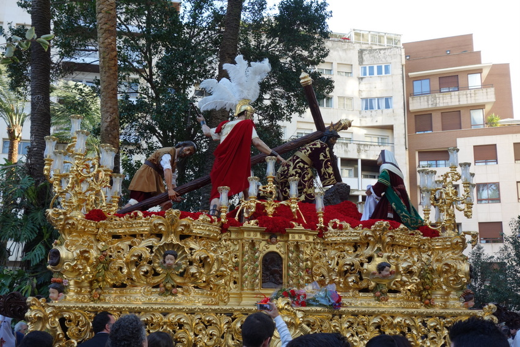

Biología
-El boto es el delfín de río más grande. Los machos adultos alcanzan una longitud y peso máximos de 2,55 m (promedio 2,32 m) y 185 kg (promedio 154 kg), mientras, las hembras llegan a medir y pesar hasta 2,15 m (promedio 2,00 m) y 150 kg (promedio 100 kg). Es uno de los cetáceos con dimorfismo sexual más marcado (los machos miden y pesan entre el 16% y 55% más que las hembras), siendo en este sentido único entre los delfines de río, en los cuales los machos son por lo general más grandes.20 La contextura del cuerpo es robusta y fuerte pero bastante flexible. A diferencia de los delfines oceánicos, sus vértebras cervicales no están fusionadas, permitiéndole a la cabeza una amplia gama de movimientos. La aleta caudal es ancha y triangular; la aleta dorsal, que tiene forma de quilla, tiene poca altura, pero es muy alargada y se extiende desde la mitad del cuerpo hasta la región caudal.15 Las aletas pectorales son grandes y tienen forma de remo. La longitud de estas aletas le permiten realizar movimiento circulares dándole una maniobrabilidad excepcional para nadar a través de la vegetación en la selva inundada; sin embargo esta característica le disminuye la velocidad de nado.21 El color del cuerpo varía con la edad. Los recién nacidos y jóvenes tienen un tinte gris oscuro; en la adolescencia se trasforma en gris claro y los adultos se tornan rosados, como consecuencia de la abrasión repetida de la superficie de la piel. Los machos tienden a ser más rosados que las hembras debido al traumatismo más frecuente por la agresión intraespecífica (entre individuos de la misma especie).10 El color de los adultos varía entre rosado sólido y moteado. En algunos adultos la superficie dorsal es más oscura; se cree que la diferencia en el color depende de la temperatura, transparencia del agua y la ubicación geográfica.10 Se tiene registro de un ejemplar albino que fue mantenido en cautiverio durante un año en un acuario de Alemania.10 El cráneo de la especie es poco asimétrico comparado con los otros odontocetos. Tiene un hocico prominente, con 25 a 28 pares de dientes largos y delgados a cada lado de ambos maxilares. La dentición es heterodonta, es decir que las piezas dentales difieren en forma y longitud; los dientes anteriores son cónicos y los posteriores tienen rebordes en la parte interna de la corona.22 Sus ojos son pequeños, pero parecen tener buena visión dentro y fuera del agua. En la frente tiene un melón de tamaño pequeño, cuya forma puede modificar mediante control muscular cuando lo usa para ecolocalización.22 Tiene un hocico prominente, largo y fino con 25 a 28 pares de dientes en las hemimaxilias. Los dientes delanteros son puntiagudos, mientras que los dientes posteriores son más planos y acopados. Los dos tipos del diente sirven diversas funciones: agarrar la presa y machacarla. Respiran cada 30 a 110 segundos. Lanzan un chorro de agua de hasta 2 metros de altura, por el orificio dorsal. La gestación dura 315 días, tras los cuales nace una cría que permanece dos años al lado de la madre.
Distribución geográfica
-El boto es el delfín de río más abundante; tiene un rango amplio de distribución dentro de su hábitat de agua dulce. Tiene presencia en seis países de América del Sur: Bolivia, Brasil, Colombia, Ecuador, Perú y Venezuela, en un área que comprende alrededor de siete millones de km². Habita todo el trayecto del río Amazonas y sus principales tributarios, incluso afluentes pequeños y lagos aledaños, desde su desembocadura cerca a Belén, hasta su origen en los ríos Marañón y Ucayali en Perú. Sus límites están establecidos por caídas de aguas infranqueables, como las de los ríos Xingú y Tapajós en Brasil, y aguas muy poco profundas. Una serie de rápidos y caídas de agua en el río Madeira han aislado la población, reconocida como la subespecie I. g. boliviensis, al sur de la cuenca del Amazonas, en Bolivia.10 El boto también se distribuye en la cuenca del río Orinoco, a excepción del río Caroní y la parte alta del río Caura en Venezuela. La única conexión entre el Orinoco y el Amazonas es a través del canal del Casiquiare. La distribución de los delfines en los ríos y zonas aledañas dependen de la época del año; en la temporada seca se ubica en el cauce de los ríos, pero en la época de lluvias, cuando los ríos de desbordan, se dispersan a las zonas inundadas, tanto al bosque (igapó) como a la llanura (varsea) inundados.10 Los estudios para estimar la población de botos son de difícil análisis, debido a la diferencia en la metodología utilizada. En un estudio realizado en el tramo del Amazonas llamado río Solimões, con una longitud de 1200 km entre la ciudad de Manaus y Tabatinga, el total de individuos avistados fue de 332±55 por cada inspección y la densidad fue estimada en 0,08-0,33 animales por km² en los canales principales, y de 0,49-0,93 animales por km² en los ramales. En otro estudio realizado en un tramo de 120 km en la confluencia de Colombia, Brasil y Perú, se observaron 345 individuos con una densidad de 4,8 en los tributarios, 2,7 alrededor de las islas y 2,0 a lo largo de la ribera.28 Adicionalmente se realizó otro estudio en el Amazonas a la altura de la desembocadura del río Caquetá durante seis días. Como resultado de los estudios realizados, se encontró que la densidad es más alta en las riberas de los ríos con 3,7 botos por km², disminuyendo hacia el centro del río. En estudios realizados durante la época de lluvias la densidad observada en las planicies inundadas fue de 18 animales por km², mientras en las riberas de ríos y lagos oscilaba entre 1,8 a 5,8 individuos por km². Estas observaciones sugieren que el delfín rosado se encuentra en densidad más alta que cualquier otro cetáceo.24 En 2002 se contaron 208 bufeos en el río Tijamuchi, Bolivia.29 En 2004, se estableció que la población del curso medio del Amazonas se estructuraba sobre la base de los sistemas de planicies inundables, con un intenso movimiento entre estos. Se estimó una población de 13 000 botos en los 11 240 m² de la Reserva de Desarrollo Sostenible Mamiraua, la cual cubre un estimado de 11%-18% de hábitat de várzea en Brasil.
|
|
|
|||
|  |
|